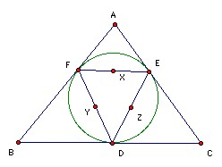
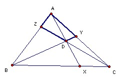

| 7. Let A1 = 0.12345678910111213..., A2 = 0.14916253649..., A3 = 0.182764125216... , A4 = 0.11681256625... , and so on. The decimal expansion of An is obtained by writing out the nth powers of the integers one after the other. Are any of the An rational? | |
| 8. A, B, C are three points on the edge of a circular pond and form an equilateral triangle with side 86 and B due west of C. A boy swims from A directly towards B. After a distance x he turns and swims due west a distance y to reach the edge of the pond. Given that x and y are positive integers, find y. | |
| 9. For any positive integer n and any prime p > 3, find at least 3(n+1) sets of positive integers a ≤ b < c such that abc = pn(a + b + c). | |
| 10. Find four positive integers < 70000 each with more than 100 positive divisors. | |
| 11. The real numbers x0, x1, ... , xn+1 satisfy 0 = x0 < x1 < ... < xn < xn+1 = 1 and 1/(xi - x0) + 1/(xi - x1) + ... + 1/(xi - xi-1) + 1/(xi - xi+1) + 1/(xi - xi+2) + ... + 1/(xi - xn+1) = 0 for i = 1, 2, ... , n. Show that xi + xn+1-i = 1 for all i. | |
| 12. A graph has n points and q edges. The edges are labeled 1, 2, ... , q. Show that we can always find a sequence of at least 2q/n edges such that the labels increase monotonically and adjacent edges have a common vertex. | |
| 13. A k-element subset is chosen at random from {1, 2, ... , 1986}. For which k is there an equal chance that the sum of the elements in the subset will be 0, 1 or 2 mod 3. | |
| 14. Find an explicit expression for f(n), the least number of distinct points in the plane such that for each k = 1, 2, ... , n there is a straight line containing just k points. | |
| 15. A particle starts at (0, 0). A fair coin is tossed repeatedly. For each head the x-coordinate is increased by 1 unless x = n, when it does not move. For each tail the y-coordinate is increased by 1 unless y = n, when it does not move. Find the probability that just 2n+k tosses are needed to reach (n, n). | |
|
16. The incircle of ABC touches the sides at DEF and the midpoints of the sides of DEF are X, Y, Z. Show that the incenter of ABC, and the circumcenters of ABC and XYZ are collinear.
 |
|
| 17. Q is a convex quadrilateral which is not cyclic. f(Q) is the quadrilateral formed by the circumcenters of the four triangles whose vertices are vertices of Q. Show that f(f(Q)) is similar to Q and find the ratio of similitude in terms of the angles of Q. | |
|
18. X, Y, Z are points on the sides of the triangle ABC, such that AX, BY, CZ meet at D inside the triangle. Show that if AYDZ and BZDX are cyclic, so is CXDY.
 |
|
| 19. The tetrahedron ABCD has AD = BC = a, AC = BD = b and AB·CD = c2. Find the smallest value of AP + BP + CP + DP for any point P in space. | |
| 20. Show that the sum of the face angles at each vertex of a tetrahedron is 180o iff the faces are all congruent triangles. | |
| 21. A tetrahedron has each sum of opposite edges equal to 1. Show that the sum of the four inradii of the faces is at most 1/√3 with equality iff the tetrahedron is regular. | |
| Note: This list does not incude problems 1-6 which were used in the Olympiad. |

Shortlist home
© John Scholes
jscholes@kalva.demon.co.uk
26 Jul 2003
Last corrected/updated 26 Jul 03